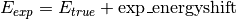
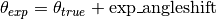

Module Experiment¶
Deals with the description of the experiment and brings experimental and simulated data together.
It contains currently only the class ReflDataSimulator, which does this job.
-
class
Experiment.ReflDataSimulator(mode, length_scale=1e-09)[source]¶ Holds the experimental data, simulates it according to the settings and fitparameters and can directly deliver the sum of squared residuals (
getSSR()) and the residuals themselfs (getResidualsSSR()), which both describe the difference between data and simulation at a certain parameter set. It can be in different modes which determins which data or which derived data is stored and simulated.-
__init__(mode, length_scale=1e-09)[source]¶ Initialize the ReflDataSimulator with a certain mode.
Parameters: - mode (string) –
The following modes are implemented so far:
- ’l’ - for linear polarized light, only reflectivity for sigma and pi polarization will be stored and simulated
- ’c’ - for circular polarized light, only reflectivity for left circular and right circular polarization will be stored and simulated
- ’t’ - only the total reflectivity (sum of reflectivities of different polarizations l/r or sigma/pi) will be stored and simulated (contains only structural information)
- ’x’ - for xmcd, only the difference between the reflectivity for right circular and left circular polarization will be stored and simulated (contains only magnetic information). Actually, it is the normalized XMCD or asymmetry (rleft-rright)/(rleft+rright).
- ’cx<xfactor>’ - for the reflections of circular pol. light and the xmcd signal (which should usually been calculated from the left and right circ. pol.) simultaniously ‘<xfactor>’ is optional and can be used to multiply the xmcd signal with this value. This can be usefull to give the xmcd more or less weight during fitting e.g.’cx20’ or ‘cx0.1’
- ’lL’, ‘cL’, ‘tL’, ‘xL’, ‘cLx<xfactor>’, - as before, but instead of the corresponding reflectivities (or derived values) themselfs their logarithms are stored and simulated. This is usefull for fitting as with the logarithm the errors of different data points are weighted in a comparable way, in spite of the strongly decaying intensitiy for higher angles (see J.Pyhs.: Condens. Matter 26 (2014) 363201, page 16).
- length_scale (float) – Defines in which unit lengths are measured in your script. The unit is then length_scale * meters. Default is length_scale = 1e-9 which means nm. It is important to define it here due to conversion between energies and wavelength.
- mode (string) –
-
ReadData(files, linereaderfunction, energies=None, angles=None, filenamereaderfunction=None, pointmodifierfunction=None, headerlines=0)[source]¶ Read the data files and store the data corresponding to the mode specified with instanciation (see
ReflDataSimulator.__init__())This function enables a very flexible reading of the data files. Logically, this function uses data points which consist of the independent variables energy and angle, and the reflectivities as dependent variables (rsigma,rpi,rleft,rright,xmcd,total). So one point is specified by (energy,angle,rsigmag,rpi,rleft,rright,xmcd,total) with energies in eV and angles in degrees. Where the values for the independent variables comes from can differ: either from lists (energies, angles), from the filenames (filenamereaderfunction) or from the lines in the data file (linereaderfunction).
The function allows for multiple data reads. Each execution adds new data to the already stored one.
Parameters: - files (str or list of str) – Specifies the set of data files. Either a list of filenames or one foldername of a folder containing all the data files (and only them!).
- linereaderfunction (callable) – A function given by the user which takes one line of an input file as string and returns a list/tuple of real numbers (energy,angle,rsigma,rpi,rleft,rright,xmcd,total). Entries can also be ‘None’. Exceptions will only be trown if the needed information for the specified mode is not delivered. An easy way to create such a function is to use the method
createLinereader(). The linereaderfunction can also return a list of lists if several datapoints are present in on line of the datafile. - energies (list of floats) – Only possible to be different from None if files is a list of filenames and angles is None. Gives the energies which belong to the corresponding files (same order) as floats.
- angles (list of floats) – Only possible to be different from None if files is a list of filenames and energies is None. Gives the angles which belong to the corresponding files (same order) as floats.
- filenamereaderfunction (callable) – A user-defined function which reads energies and/or angles from the filenames of the data files. This function should take a string (a filename without path), extract energy and/or angle out of it and return this as a tuple/list (energy,angle). Both entries can also be set to None, but their will be an exception if the needed information for the data points can also not be obtained from the linereaderfunction.
- pointmodifierfunction (callable) – A user-definde function which is used to modify the obtained information. It takes the tuple/list of independent and dependent variables of a single data point and returns a modified one. It can be used for example if the data file contains qz values instead of angles. In this case you can read the qz values first as angles and replace them afterwards with the angles calculated out of it with the pointmodifierfunction. Of course you can also use a adopted linereaderfunction for this purpose (if all necessary information can be found in one line of the data files).
- headerlines (int) – specifies the number of lines which should be ignored at the top of each file.
-
setData(datapoints)[source]¶ Store the data given with datapoints corresponding to the mode specified with instanciation (see
ReflDataSimulator.__init__()) instead of reading the data from data files (seeReadData()).- datapoints has to be a list/array of datapoints of the following form:
- [[energy1,angle1,rsigma1,rpi1,rleft1,rright1,xmcd1,total1], …, [energyK,angleK,rsigmaK,rpiK,rleftK,rrightK,xmcdK,totalK]
Each datapoint corresponds to a measurement of the reflectivity at a certain angle and energy. Entries are alowed to hold None if the corresponding entry is not needed for current mode.
The function allows for multiple data reads. Each execution adds new data to the already stored one.
-
setModel(heterostructure, exp_energyshift=<PyXMRTool.Parameters.Parameter object>, exp_angleshift=<PyXMRTool.Parameters.Parameter object>, reflmodifierfunction=None, MultipleScattering=True, MagneticCutoff=1e-50)[source]¶ Set up the model for the simulation of the reflectivity data.
The simulation of the reflectivities is in prinicple done by using the information about the sample stored in heterostructure (of type
SampleRepresentation.Heterostructure). But to connect the simulation with the experiment it is also important to take into account systematic errors in energy and angles and to be able to adjust the simulated reflectivities to measured ones with offset and scaling.A first step concerns the independent variables energy and angles. We assume, the experiment does not measure the true quantities. Instead they measure shifted quantities:  and . The simulated reflectivities will be calculated for the true quantities which correspond to the measured ones. (by substraction of the shifts) exp_energyshift and exp_angleshift are measured in eV and degrees resp.
The calculated reflectivities are then given to the reflmodifierfunction for further modification of the reflectivity values (takes one number or numpy array and the fitpararray; returns one number or a numpy array). This function has to be defined by the user and can be used for example to multiply the reflectivity by a global number and/or to add a common background. To make these numbers fittable, use the fitparameters registerd at an instance of
Paramters.ParamterPool. Example:pp=Paramters.ParameterPool("any_parameterfile") ... b=pp.newParameter("background") m=pp.newParameter("multiplier") reflmodifierfunction=lambda r, fitpararray: b.getValue(fitpararray) + r * m.getValue(fitpararray)
and give this function to
setModel().BEWARE: The reflmodifierfunction is called very often during fitting procedures. Make it performant!
With MultipleScattering you can switch on (True) and off (False) the simulation of multiple scattering. False is 20 percent faster. Default is True. Has no effect on calculations that require the full matrix.
MagneticCutoff: If an off-diagonal element of chi (chi_g) fulfills abs(chi_g)<MagneticCutoff, it is set to zero. It defaults to 10e-50.
The last two parameters are directly passed to
Pythonreflectivity.Reflectivity(). See also the Documentation ofPythonreflectivity.
-
getLenDataFlat()[source]¶ Return length of the flat data representation.
It will be the number of measured data points times 2 for mode “l” and “c”, only the number of measured data points for mode “x” and “t”, and the number of measured data points times 3 for mode “cx”
-
getSimData(fitpararray, energy_angles=None)[source]¶ Return simulated data according to the bevor set-up model and the parameter values given with fitpararray (see also
Parameters). Usually, the data is simulated for the energies and angles of the stored experimental data (substracted by exp_energyshift and exp_angleshift, seesetModel()).If you specify energy_angles, then the data is simulated for the energy/angle combinations given there (also substracted by exp_energyshift and exp_angleshift, see
setModel()).energy_angles has to have the following shape:
[[energy1,[angle11,....angle1N]], ...[energyL,[angleL,....angleLK]]
The returned data is a list and has on of the following or similar shapes:
[[energy1,[angle1,....angleN], [rsigma1, .... rsigmaN], [rpi1,...rpiN]], ...[energyL,[angle1,....angleK], [rsigma1, .... rsigmaK], [rpi1,...rpiK]] [[energy1,[angle1,....angleN], [rleft1, .... rleftN], [rright1,...rrightN]], ...[energyL,[angle1,....angleK], [rleft1, .... rleftK], [rright1,...rrightK]] [[energy1,[angle1,....angleN], [xmcd1, .... xmcdN]], ...[energyL,[angle1,....angleK], [xmcd1, .... xmcdK]] [[energy1,[angle1,....angleN], [rleft1, .... rleftN], [rright1,...rrightN], [xmcd1, .... xmcdN]]], ...[energyL,[angle1,....angleK], [rleft1, .... rleftK], [rright1,...rrightK],[xmcd1, .... xmcdK]] [[energy1,[angle1,....angleN], [xmcd1, .... xmcdN]], ...[energyL,[angle1,....angleK], [total1, .... totalK]]
-
getExpData()[source]¶ Return stored experimental data.
The retured data is a list and has on of the following or similar shapes:
[[energy1,[angle1,....angleN], [rsigma1, .... rsigmaN], [rpi1,...rpiN]], ...[energyL,[angle1,....angleK], [rsigma1, .... rsigmaK], [rpi1,...rpiK]] [[energy1,[angle1,....angleN], [rleft1, .... rleftN], [rright1,...rrightN]], ...[energyL,[angle1,....angleK], [rleft1, .... rleftK], [rright1,...rrightK]] [[energy1,[angle1,....angleN], [xmcd1, .... xmcdN]], ...[energyL,[angle1,....angleK], [xmcd1, .... xmcdK]] [[energy1,[angle1,....angleN], [rleft1, .... rleftN], [rright1,...rrightN], [xmcd1, .... xmcdN]]], ...[energyL,[angle1,....angleK], [rleft1, .... rleftK], [rright1,...rrightK],[xmcd1, .... xmcdK]]
-
getSSR(fitpararray)[source]¶ Return sum of squared residuals between measured and simulated data as float according to the parameterset given by fitpararray (see also
Parameters).
-
getResidualsSSR(fitpararray)[source]¶ Return the residuals and the sum of squared residuals between measured and simulated data according to the parameterset given by fitpararray (see also
Parameters).The information is returned as tuple: array of differences between simulated and measured data, sum of squared residuals.
-
getResiduals(fitpararray)[source]¶ Return the residuals between measured and simulated data according to the parameterset given by fitpararray (see also
Parameters).
-
plotData(fitpararray, simcolor='r', expcolor='b', simlabel='simulated', explabel='experimental', energy_angles=None)[source]¶ Plot simulated and experimental data.
If energy_angles is given, it will only plot simulated data for the given energy/angle combinations.
This function generates a plot at the first call and refreshes it if called again.
Parameters: - simcolor (str) – Specifies the color of the simulated data for the plotting with pyplot (see https://matplotlib.org/users/colors.html). Default is red.
- expcolor (str are supposed to be strings which specify a color for the plotting with pyplot (see https://matplotlib.org/users/colors.html).) – Specifies the color of the experimental data for the plotting with pyplot (see https://matplotlib.org/users/colors.html). Default is blue.
- simlabel (str) – Label shown in the legend of the plot for the simulated data. Default is “simulated”.
- explabel (str) – Label shown in the legend of the plot for the experimental data. Default is “experimental”.
- energy_angles (list) –
If given, only simulated data will be plotted for the given energy/angle combinations. It has to have the following shape:
[[energy1,[angle11,....angle1N]], ...[energyL,[angleL,....angleLK]]
-
setMode(mode)[source]¶ Change the mode after instantiation.
Be carefull with this function. Errors can occur if the mode does not fit to the available information in the data files.
Parameters: mode (string) – The following modes are implemented so far:
- ’l’ - for linear polarized light, only reflectivity for sigma and pi polarization will be stored and simulated
- ’c’ - for circular polarized light, only reflectivity for left circular and right circular polarization will be stored and simulated
- ’s‘ - only the sum of the reflectivities of left and right polarized light will be stored and simulated (contains only structural information)
- ’x’ - for xmcd, only the difference between the reflectivity for right circular and left circular polarization will be stored and simulated. Actually, it is the normalized XMCD or asymmetry (rleft-rright)/(rleft+rright).
- ’cx<xfactor>’ - for the reflections of circular pol. light and the xmcd signal (which should usually been calculated from the left and right circ. pol.) simultaniously ‘<xfactor>’ is optional and can be used to multiply the xmcd signal with this value. This can be usefull to give the xmcd more or less weight during fitting e.g.’cx20’ or ‘cx0.1’
- ’lL’, ‘cL’, ‘sL’, ‘xL’, ‘cLx<xfactor>’, - as before, but instead of the corresponding reflectivities themselfs their logarithms are stored and simulated. This is usefull for fitting as with the logarithm the errors of different data points are weighted in a comparable way, in spite of the strongly decaying intensitiy for higher angles (see J.Pyhs.: Condens. Matter 26 (2014) 363201, page 16).
-
static
createLinereader(energy_column=None, angle_column=None, rsigma_angle_column=None, rsigma_column=None, rpi_angle_column=None, rpi_column=None, rleft_angle_column=None, rleft_column=None, rright_angle_column=None, rright_column=None, xmcd_angle_column=None, xmcd_column=None, total_angle_column=None, total_column=None, commentsymbol='#')[source]¶ Return a linereader function which can read lines from whitespace-seperated files and returns a datapoint, which is a lists of real numbers [energy,angle,rsigma,rpi,rleft,rright,xmcd,sum] (or None for a uncommented line). Values can also be None. The linereader function returns a list of datapoints if several angles are defined within one line.
With the parameters …_column you can determin wich column is interpreted how. Instead of one angle for all reflectivities within one line (angle_column), one can also define columns for angles which are specifically for one reflectivity polarization. Column numbers are starting from 0.
-
mode¶ The current mode. See
__init__()for possible modes. Read-only.
-
hcfactor¶ Planck constant times the speed of light in units of eV times the unit of length which was defined by length_scale with
__init__(). Read-only. BEWARE: It is h times c not h_bar times c.
-